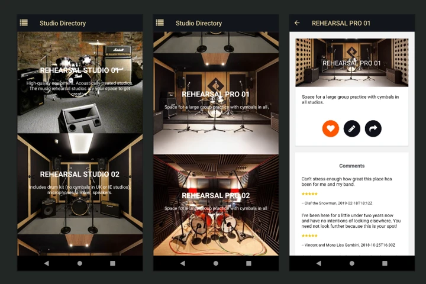
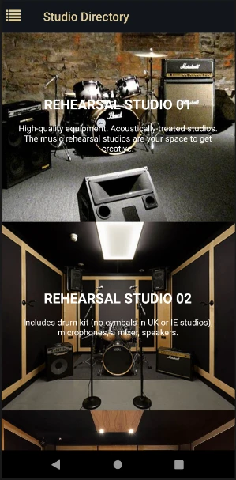
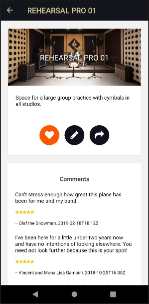
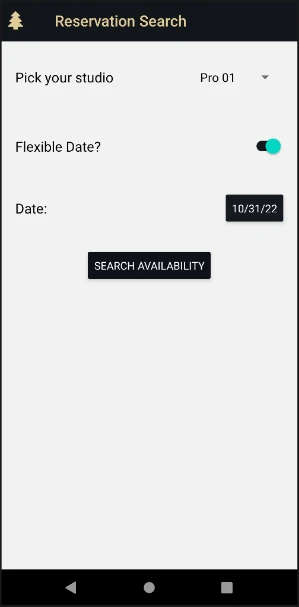

Pirates
From finding a rehearsal room to making time to create.
A studio discovery and reservation app for musicians and other creative users. The mobile flow brings studio information, promotions, favorites, and upcoming bookings together.
Mobile development · Interface design
React Native · Expo · Redux Toolkit · React Navigation

Discover a space
The directory leads with photographs of rehearsal spaces and concise studio information. Users can compare rooms, explore promotions, and open a studio to see more detail.



Save and reserve
A studio detail screen connects discovery to action. Users can save favorite locations, select reservation dates and times, and manage upcoming bookings.




A connected mobile experience
React Navigation organizes the screen flow; Redux Toolkit and Redux Persist manage shared and persisted state. Expo Notifications provide local appointment reminders. The original project is inspired by Pirate Studios. It is an archived portfolio application, rather than an actively maintained booking service.